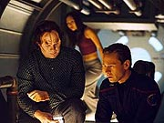
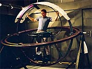
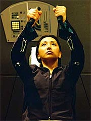

|
MANCHETE
DO EPISDIO
Segmento
tenta desenvolver Hoshi
num sonho chato e redundante
Episdio
anterior | Prximo
episdio
Sinopse:
Hoshi Sato e Trip Tucker esto em uma misso num planeta desabitado, estudando as runas de uma antiga civilizao que l viveu. Os dois ainda tinham muito o que explorar, quando Archer contata Trip e avisa que os dois precisaro voltar nave rapidamente, em razo de uma tempestade muito forte que se aproxima daquela regio.
No fosse apenas a violncia dos ventos e da chuva, que impediam o retorno com o shuttlepod, uma outra tempestade de natureza eletromagntica tambm se deslocava para o local. Sem alternativa, Archer decide que os dois tero de voltar via teletransporte.
Hoshi est com muito medo de ter suas molculas desfeitas e refeitas pela mquina, o que faz com que Trip v primeiro. Se ele chegar so e salvo, diz a oficial, ela ir em seguida. O engenheiro concorda e se teletransporta. Da nave, ele contata Hoshi e diz que ela pode subir.
 A oficial desaparece e volta a aparecer, em segurana, na Enterprise. Apesar disso, ela comea a se sentir cada vez mais estranha. Em seus aposentos, olhando no espelho, ela tem a impresso de que a experincia fez com que uma marca de nascena dela se deslocasse. Preocupada, Hoshi vai at a enfermaria, para que Phlox possa fazer um exame.
O mdico entende o estresse pelo qual a oficial est passando, mas garante que ela est absolutamente sadia. Mesmo assim, ela comea a passar por experincias cada vez mais intrigantes. Primeiro, ela vai at o refeitrio, onde Travis, Trip e Malcolm parecem simplesmente no dar ateno a ela. L, o trio lhe conta a histria de Cyrus Ramsey, o primeiro voluntrio num experimento de teletransporte -- que nunca se materializou novamente.
Ela volta sua cabine e, depois de dormir mais do que o normal, acordada subitamente, atrasada para assumir seu posto na ponte. Ela chamada para resolver um problema: Travis e Trip, que voltaram superfcie para buscar o shuttlepod, foram capturados como refns dos aliengenas locais.
Hoshi vai ponte, absolutamente intrigada: no havia ningum vivo l embaixo. Segundo Archer, eles ficaram ofendidos com a invaso e o estudo de suas runas sagradas. Hoshi precisa se comunicar com os aliengenas, mas incapaz, com ou sem tradutor universal, de entender sua lngua. Sem pacincia, Archer a troca pelo oficial Baird, que rapidamente resolve a situao. Hoshi dispensada do servio.
Mais tarde, de novo no refeitrio, ela se junta a T'Pol, que conta como Baird solucionou o problema e confirma que ela est dispensada permanentemente, substituda pelo oficial. Pior: agora no s seus colegas parecem no lhe dar ateno, mas as portas parecem no responder mais sua presena. E, no banho, ela tem a impresso de que suas mos desapareceram por um momento.
De volta enfermaria, ela garante a Phlox que h algo errado. O mdico novamente confirma que est tudo bem e recomenda dar a ela um sedativo, para que Hoshi possa descansar. A oficial se recusa. Em vez disso, ela vai sala de ginstica da nave, onde Trip est se exercitando. Ela pede desculpas por no ter sido capaz de resolver a crise de refns, mas o engenheiro entende. Ele diz que ela passou por maus bocados e deveria pedir ao doutor Phlox um sedativo. Respondendo que os homens so todos iguais, Hoshi deixada a ss na sala de ginstica.
Depois, quando ela resolve sair, descobre que no consegue mais tocar as coisas, como se estivesse se dissolvendo. Pior, lentamente seu reflexo desaparece do espelho. como se ela tivesse sumido.
Hoshi passa a noite na sala de ginstica, e acordada de manh pelo barulho de T'Pol e Trip entrando l. Os dois esto investigando o desaparecimento da oficial, e, apesar de ela estar l, os eles no conseguem v-la. Aproveitando, entretanto, que os dois abriram a porta, ela sai e os acompanha pela nave.
Na enfermaria, Phlox explica o que houve. Aparentemente, suas leituras mais detalhadas mostraram que Hoshi realmente sofreu um problema durante o transporte, que causou instabilidade em suas molculas. Segundo o doutor, a essa altura, s sero encontrados resduos da oficial. O mdico e Trip acabam achando os resduos em um dos dutos da nave, supostamente confirmando a morte de Hoshi.
 Mas ela est l! Enquanto ouve os lamentos de Trip sobre sua morte, ela tambm percebe uma certa movimentao nos dutos. Descobre ento um par de aliengenas instalando uma bomba na nave. Ela corre para tentar avisar o capito Archer, que na ocasio est comunicando ao pai de Hoshi a morte da oficial.
Apesar de Archer no conseguir v-la, Hoshi consegue fazer com que um painel pisque em cdigo morse. Ela primeiro envia "SOS", que Archer consegue pegar. Depois ela tenta enviar "Hoshi", mas o capito no est to familiarizado assim com o morse. Ele e T'Pol acabam concluindo que o SOS foi uma coincidncia.
Hoshi decide ento que vai ter de impedir os aliengenas sozinha. Ela consegue atras-los um pouco, mas eles acabam tendo sucesso, fugindo numa plataforma de transporte. Sem alternativa, ela vence o medo e sobe na plataforma. Quando teleportada, se materializa na sala de transportes da Enterprise.
Tucker informa a alferes de que ela acaba de retornar das runas, aps a tempestade. Malcolm teve dificuldades em reintegrar seu padro, e ela passou alguns segundos semi-materializada, o que permitiu que ela tivesse toda aquela alucinao. Mas tudo no passou de um sonho. At mesmo Cyrus Ramsey nunca existiu, a no ser no inconsciente de Hoshi.
Comentrios:
"Vanishing Point" foi rotulado pelo produtor-executivo Rick Berman como um episdio aparentado de
"The Inner
Light", de A Nova Gerao. S se for no gnero pardia, penso eu.
um sacrilgio comparar seriamente um segmento to profundo e emocional com seu atual travesti. O que vemos aqui o mesmo mecanismo para contar uma histria (uma alucinao induzida), mas usado de forma muito mais mundana e coloquial.
No h uma experincia extremamente pessoal, sobre o que uma vida poderia ser e no foi; no h uma vida inteira vivida sob outra identidade; no h uma civilizao tentando desesperadamente no ser relegada ao esquecimento. Em vez de tudo isso, h um simples acidente. Um acidente. No d para comparar.
Em "The Inner
Light", no h nenhuma inteno por parte dos roteiristas de esconder da audincia que Picard est sofrendo uma alucinao por parte da sonda. J sabemos logo de cara que nada daquilo est de fato acontecendo, e por essa razo se torna muito mais interessante explorar aquela situao. Aqui, somos trapaceados, levados a crer que o transporte de Hoshi de fato foi concludo e que toda aquela doideira est de fato acontecendo. S no final somos confrontados com a cena "enganei um bobo, na casca do ovo".
Esse truque poderia valer a pena se aprendessemos um pouco mais sobre a psique da alferes Sato. Mas tudo que o episdio nos oferece mais do mesmo: as mesmas fobias, a falta de adaptao da oficial explorao espacial, o medo do teletransporte... e sua posterior superao, ao fim do episdio. Essa parece ser a frmula bsica dos episdios de Hoshi.
"Fight or Flight" vem logo mente.
Antes da exibio, o episdio tambm havia sido comparado a "The Next
Phase", da Nova Gerao. Mas, claramente, seu parentesco maior com
"Remember Me", que lida com a fobia da dra. Crusher de ver toda a tripulao desaparecendo. Aqui a premissa apresentada s avessas -- Hoshi quem est desaparecendo.
 Mesmo assim, o que todos os episdios citados conseguiam fazer, sendo ou no verdade o que estava acontecendo, era manter um certo ar de que, ao menos, poderia ser verdade. Aqui, as alucinaes de Hoshi s conseguem transparecer que, se tudo for mesmo verdade, trata-se do pior episdio j escrito.
No s por muito pouco de seu enredo fazer sentido (seu desaparecimento uma viagem absurda, assim como a situao dos refns, a presena dos aliengenas, e por a vai), mas pelo fato de esse enredo, apesar de livre das restries da realidade, ser extremamente enfadonho. A gente quase torce para a Hoshi desaparecer de vez, s para o episdio acabar. sonolento bea.
Ele no chega agredir os personagens, como o infame "A Night in
Sickbay", mas tambm no o faz simplesmente por no apresent-los -- todos so iluses de Hoshi. A nica que poderia ter algum desenvolvimento, a prpria alferes, no apresenta nenhuma novidade com relao a suas aparies anteriores.
Do ponto de vista tcnico, o episdio tambm no particularmente marcante. A maioria absoluta das cenas se passa a bordo da Enterprise, o que no ajuda a tornar o segmento mais interessante. O nico elemento que pareceu genuinamente interessante no delrio de Hoshi foi a lenda urbana de Cyrus Ramsey -- que, descobrimos ao final, no passou de imaginao da alferes.
A direo razovel, com alguns toques de brilhantismo, como na cena em que Phlox est explicando a Archer como Hoshi desapareceu, enquanto a cmera gira para nos mostrar a prpria alferes, ao fundo, fora de foco. Mas nada disso capaz de nos salvar de um roteiro derivativo e enfadonhos.
Sobra muito pouco para elogiar em "Vanishing Point". Apesar de seu ponto de partida estar firmemente calcado na premissa da srie (a tecnologia nova e o transporte ainda no 100% confivel), a sucesso de erros na roteirizao e execuo, alm da evidente falta de criatividade, minou qualquer chance de sucesso para o segmento. Um dos pontos mais baixos da temporada.
Citaes:
Tucker - "I think this says 'tall guys are popular.'"
("Acho que aqui diz 'caras altos so populares'.")
Sato - "You go first. If you get back to Enterprise in one piece, I'll be right behind you."
("Voc vai primeiro. Se voc voltar Enterprise num pedao, estarei logo atrs de voc.")
Tucker - "Next think you'll tell us is that ya never heard of the Easter Bunny."
("A prxima coisa que voc vai nos dizer que nunca ouviu falar do Coelho da Pscoa.")
Sato - "I'm not talking about the storms, I'm talking about my molecules!"
("Eu no estou falando das tempestades, estou falando de minhas molculas!")
Sato - "I hope you don't plan on 'beaming' me anywhere for a long time!"
("Espero que voc no pense em me 'transportar' para lugar nenhum por um longo tempo!")
Trivia:
 Rick Berman chegou a comentar o episdio, antes da exibio. "Esse vai ser um episdio bem incomum que ter certas qualidades meio similares ao episdio
'The Inner Light'."
Rick Berman chegou a comentar o episdio, antes da exibio. "Esse vai ser um episdio bem incomum que ter certas qualidades meio similares ao episdio
'The Inner Light'."
O ator Keone Young j havia aparecido em Jornada, interpretando o imaginrio Buck Bokai, em
"If Wishes Were Horses"
(Deep Space Nine). Morgan H. Margolis j havia interpretado o visitante Vaskano em
"Living Witness" (Voyager).
As filmagens comearam em 2 de outubro de 2002 e foram at o dia 11.
"Vanishing Point" apresenta o primeiro uso do termo "beaming" para o teletransporte na srie.
Ficha
tcnica:
Escrito por Rick Berman &
Brannon Braga
Direo de David Straiton
Exibido em 27/11/2002
Produo:
036
Elenco:
Scott
Bakula como Jonathan Archer
Jolene Blalock como
T'Pol
John Billingsley
como Phlox
Anthony Montgomery
como Travis Mayweather
Connor Trinneer como
Charlie 'Trip' Tucker III
Dominic Keating como
Malcolm Reed
Linda Park como Hoshi Sato
Elenco convidado:
Keone Young como pai de Hosh
Gary Riotto como aliengena 1
Morgan H. Margolis como tripulante Baird
Ric Sarabia como aliengena 2
Carly Thomas como Alison
Episdio
anterior | Prximo
episdio
|